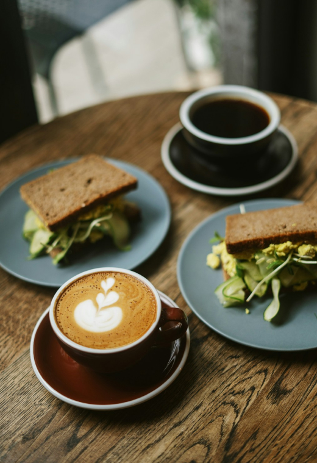
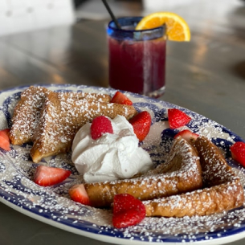
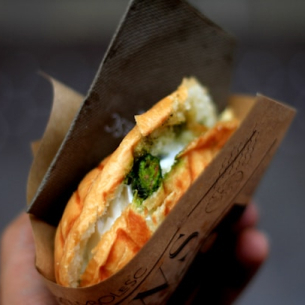
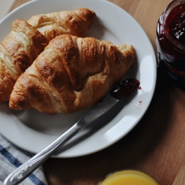
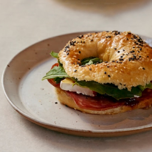
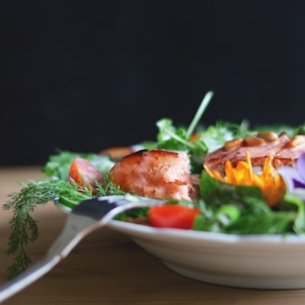

음료와 완벽한 조화를 이루는 여하의 델리 메뉴, 신선한 재료로 정성스럽게 준비한 샌드위치와 샐러드까지. 카페 여하에서 음료와 함께 더 풍성한 여유를 즐겨보세요.
카페여하는 음식의 맛뿐 아니라 고객의 건강과 마음도 중요하게 생각합니다.
신선한 재료와 균형 잡힌 영양, 그리고 정성으로 준비한 델리 메뉴로 건강하고 행복한 하루를 만들어드립니다.

시그니처 델리

여하 시그니처 프렌치토스트
YEOHA Signature French Toast
바삭한 겉과 촉촉한 속의 프렌치토스트에 달콤한 메이플 시럽과 신선한 과일이 어우러져 풍성하고 달콤한 맛을 선사합니다. 첫 입에서부터 입안을 가득 채우는 달콤함과 신선함이 완벽한 조화를 이룹니다.
디저트를 좋아하는 사람이나, 달콤한 아침을 원하는 분들에게 추천하는 메뉴입니다. 브런치로 가볍게 즐기기에 완벽한 메뉴입니다.

여하 클래식 파니니
YEOHA Classic Panini
그릴드 치아바타 빵 사이에 담긴 구운 치킨, 신선한 모짜렐라 치즈, 그리고 바질 페스토가 어우러져 고소하고 풍미 깊은 맛을 자랑합니다. 치아바타의 바삭한 겉면은 그릴에서 나온 따뜻한 속재료와 완벽하게 조화를 이루며, 치즈가 녹아내리면서 입안에서 부드럽고 깊은 맛을 전달합니다.
간편하게 한 끼를 해결하고 싶은 분이나, 따뜻하고 든든한 음식을 원하시는 고객에게 적합합니다. 맛과 영양을 고루 챙기고 싶은 분들에게도 좋습니다.

여하 시그니처 크로와상
YEOHA Signature Croissant
겉은 바삭하고 속은 부드러운 크로와상은 고소하고 풍부한 버터 향이 입안을 가득 채웁니다. 따뜻하게 구운 크로와상의 겉면은 바삭하며, 속은 부드럽고 공기처럼 가벼워 첫 입에서부터 기분 좋은 식감을 선사합니다.
부드럽고 고소한 빵을 즐기고 싶은 분들에게 이상적입니다. 고급스러운 맛을 원하는 분들, 특히 여유로운 오후에 따뜻한 빵과 함께 커피를 즐기고 싶은 분들께 추천합니다.

여하 베이글 샌드위치
YEOHA Bagel Sandwich
쫄깃한 베이글에 풍성하게 들어간 신선한 재료들이 한 입마다 깊은 만족을 선사합니다. 특별히 준비된 소스는 풍미를 한층 끌어올려, 베이글 샌드위치가 전하는 맛의 균형이 완벽하게 느껴집니다.
간편하면서도 맛있는 한 끼를 찾고 있는 분들에게 이상적인 메뉴입니다. 바쁜 일상 속에서 빠르고 맛있게 즐길 수 있는 식사를 원하거나, 브런치로 손쉽게 건강한 음식을 원하는 분들에게 추천합니다.

여하 블리스 샐러드
YEOHA Bliss Salad
신선한 계절 채소들이 가득 들어 있으며, 리코타 치즈의 부드러움과 고소한 견과류가 풍성하게 더해져, 식감이 다양하고 풍성한 맛을 선사합니다. 상큼한 시트러스 드레싱과 모든 재료들이 서로 어우러져 균형 잡힌 맛을 만들어냅니다.
상큼하고 신선한 맛을 좋아하는 분들이나, 가벼운 식사를 원하는 분들에게 이상적인 메뉴입니다. 건강하고 맛있는 식사를 찾고 있는 분들께 추천합니다.